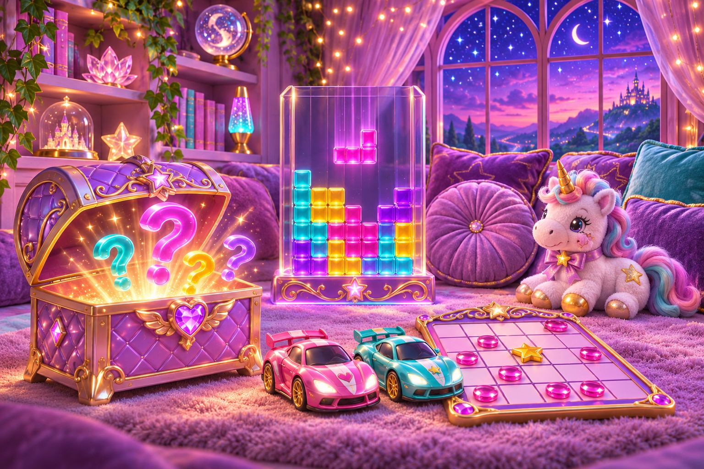
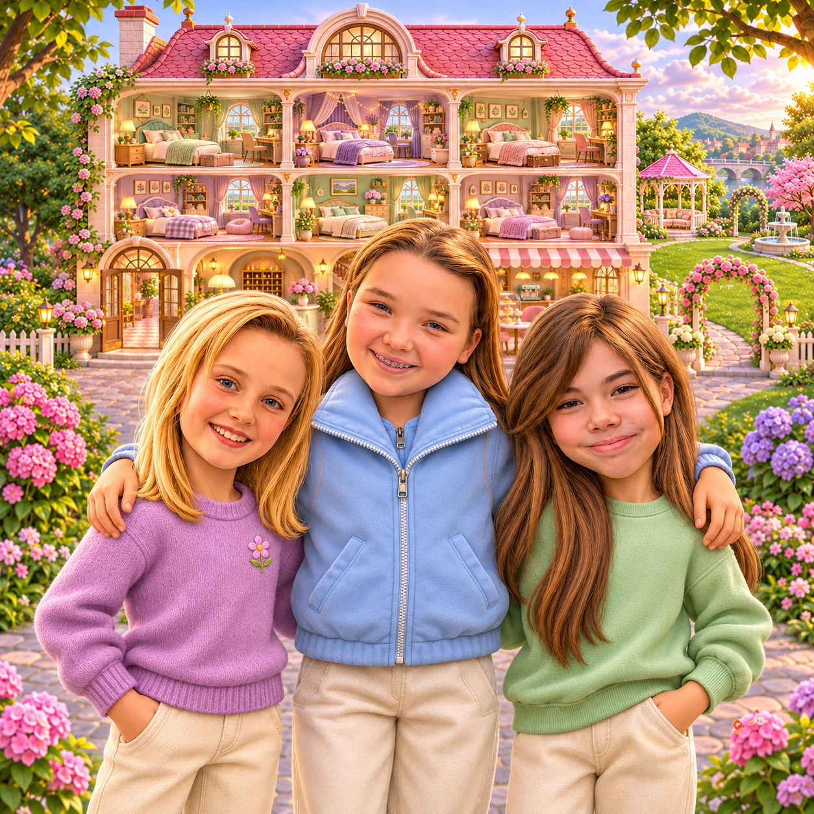
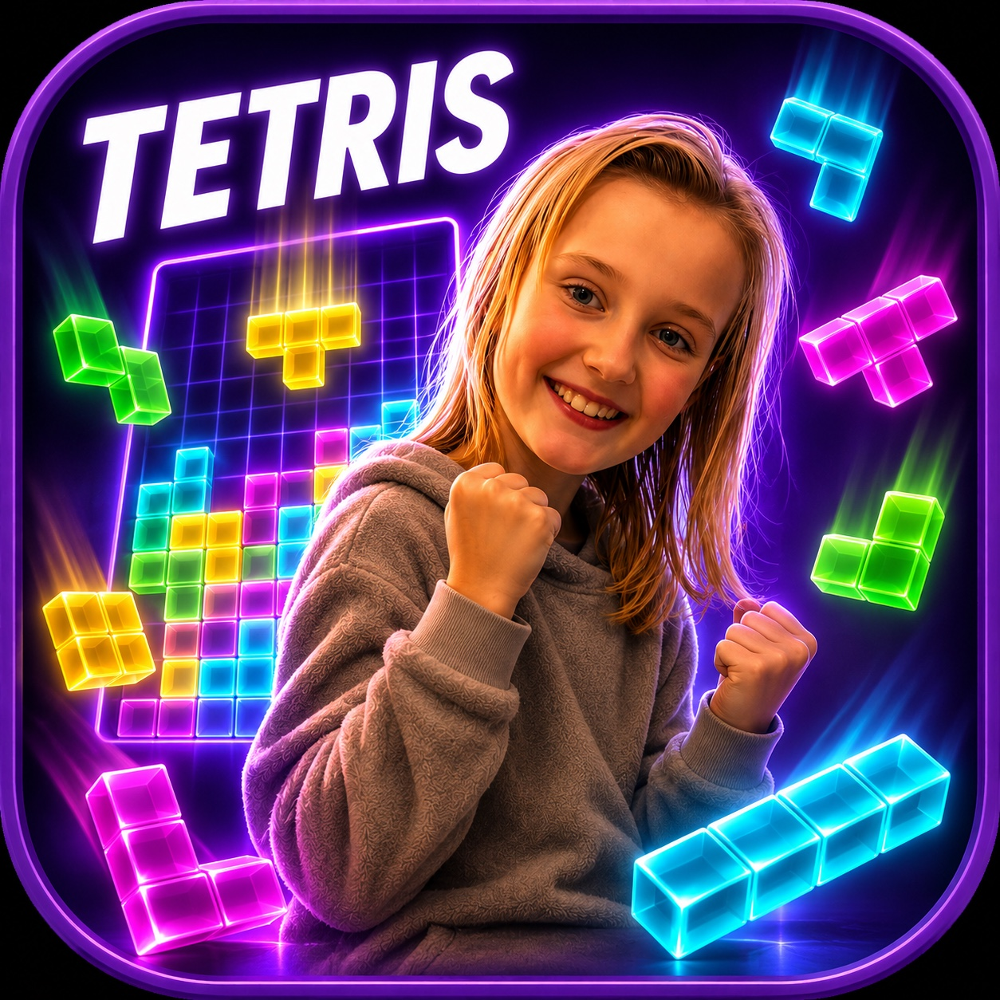
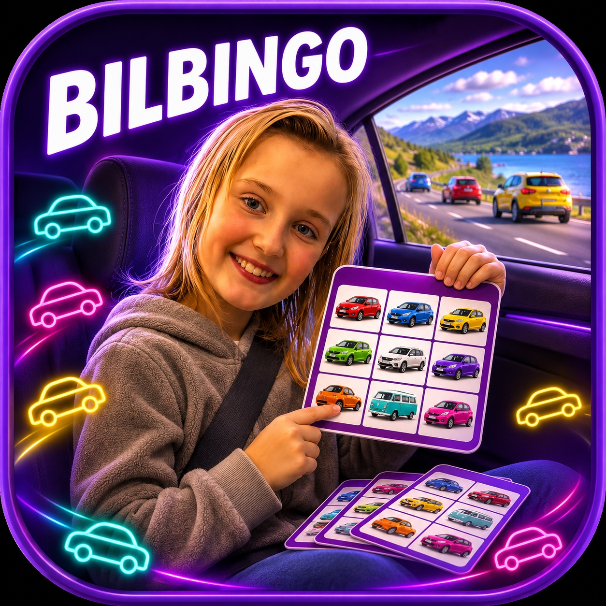

Velkommen til

Innred rom, ta imot gjester og bestem hvordan hotellet skal drives. Et privat spill for tre venninner.
Lag smoothies, løs mattebestillinger og pynt kafeen. Spill alene eller med en venn på én eller to telefoner.
Hvilket tall skjuler seg? Gjett alene eller spill sammen med opptil tre andre.

Flytt og snu de fallende klossene. Fyll hele rader og samle poeng!

Se etter biler i ulike farger på turen. Spill sammen og samle poeng for bilene dere finner!